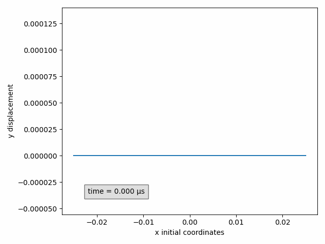
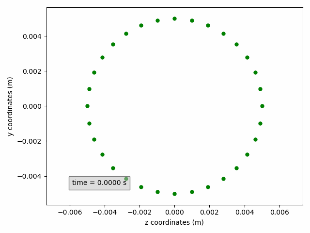

Post-processing
As described in the coupled solver documentation, a pickle file can be saved to store details on the computation. This includes
- solution data on the interface,
- position of the data points on the interface,
- details on the convergence behaviour, such as number of coupling iterations and coupling residuals,
- distribution of the elapsed simulation time,
- and history of the simulation, such as restarts.
This information can be accessed by loading the pickle file, for example for a file case_results.pickle:
import pickle
with open('case_results.pickle', 'rb') as f:
data = pickle.load(f)
Nevertheless, CoCoNuT also provides a more user-friendly tool to visualize and inspect this information.
The class PostProcess
Instead of loading the pickle file directly, its path can be used to create an instance of the PostProcess class.
from coconut.examples.post_processing.post_processing import *
pp = PostProcess('case_results.pickle')
Info
The example code in this document has been created for the tube/openfoam3d_kratos_structure3d example.
Printing this class provides an overview of the simulation, for example
print(pp)
PostProcess of pickle file case_results.pickle
Containing 100 time steps with size 0.0001s
Coupling
interface "interface_x" consisting of
model part "mantle_input" with variables
displacement (vector)
interface "interface_y" consisting of
model part "mantle_output" with variables
pressure (scalar)
traction (vector)
Among the methods of this class are:
-
The method
print_summary()prints a summary of the elapsed simulation time and its distribution over the different components, similar to the summary outputted at the end of a simulation.pp.print_summary() -
The method
print_info()prints information on when the simulation was started and if it was restarted as well as on which machine it has been run.pp.print_info() -
The method
get_data()returns a copy of the data in the pickle file. -
The method
get_residual_history()returns a copy of the list of coupling residuals (nested list, which contains for each time step a list of the coupling residuals of that time step). -
The method
get_coupling_iterations()returns a copy of the list of the number of coupling iterations per time step. -
The method
add_subset(**kwargs)allows to create and add a subset of selected points and/or time steps. This will prove useful for extracting data and making plots or animations. It requires several keyword arguments as detailed by theSubSetdocumentation. MultipleSubSetscan be added. A list containing the addedSubSetscan be accessed through theget_subsets()method.
The class SubSet
A SubSet is always added to a PostProcess instance and is used to select particular points and/or time steps.
A SubSet needs to be defined on a single interface and model part.
The selection of points thus needs to be within a single model part. If points from multiple model parts are required, multiple SubSets have to be added.
If our example above only has one model part for both the x- and y-interface, this might be done as follows.
sx = pp.add_subset(interface='interface_x')
sy = pp.add_subset(interface='interface_y')
'interface_x' and 'interface_y' refer to the input and output interface of the first solver, respectively.
The first solver is typically the flow solver such that 'interface_x' contains displacement values
and 'interface_y' contains pressure and traction values.
The interfaces of the second solver are not accessible, since they are not stored!
If in our examples, there would have been multiple model parts, an error would have been raised when adding the subset, because the declaration is ambiguous. In that case, the model part would also have to be specified. The full set of possible arguments is given below.
| keyword argument | type/value | description |
|---|---|---|
interface |
'interface_x' or 'interface_y' |
(optional) Indicates whether the SubSet is created on the input interface of the first solver ('interface_x') or the output interface of the first solver ('interface_y'). Note that a SubSet cannot be defined with multiple interfaces! |
model_part |
str | (optional) Chooses the model part from which the SubSet is created. Note that a SubSet cannot be defined with multiple model parts! The model part names of a PostProcess instance can be accessed with the method ´get_model_part_names()´. |
variable |
str | (optional) Selects the variable of which data needs to be outputted for the selected points and time step. These are the calculation variables specified in the JSON file, plus the variable 'coordinates'. For example 'displacement', 'pressure', 'traction'. |
component |
'x', 'y', 'z', 0, 1 or 2 |
(optional) Selects the component of the variable that needs ot be outputted in case of a vector variable. 0, 1 and 2 correspond to 'x', 'y'and 'z', respectively. |
sort |
tuple | (optional) Default: (0, 1, 2). Priority for ordering points. By default, the points are ordered first by x-coordinate, then y-coordinate and finally z-coordinate. |
While the interface and model part cannot be changed once the SubSet is created, the variable and component can be modified on the fly.
Selecting points
To make a selection of points the method select_points(p_mask) is used, where p_mask is a one-dimensional numpy-array containing boolean values and with a length equal to the number of points in the model part.
A True value selects the corresponding point, whereas a False value deselects it.
The recommended approach is using inequalities on the output of get_initial_coordinates(), which returns a two-dimensional array, where the rows are the points and the three columns correspond to the three components, x, y and z, respectively.
The following example selects points with a z-coordinate close to zero and a positive y-component.
initial_coordinates = sx.get_all_initial_coordinates()
mask1 = abs(initial_coordinates[:, 2]) < 0.0005
mask2 = initial_coordinates[:, 1] > 0
sx.select_points(mask1 & mask2)
initial_coordinates = sy.get_all_initial_coordinates()
mask1 = (initial_coordinates[:, 2] > 0) & (initial_coordinates[:, 2] < 0.0005) # (1)!
mask2 = initial_coordinates[:, 1] > 0
sy.select_points(mask1 & mask2)
- The specific inequalities in which the points are selected are case specific. Here for example, the points on the
y-interfaceare not located exactly on the xy-plane, but just next to it. The points with a positive z-coordinate close to zero are selected.
These methods are also useful:
get_size()returns the size of the selection,get_initial_coordinates_selection()returns the initial coordinates of the selection,reset_points_selection()undoes point selection, in other words, selects all points.
Selecting times
The selection time steps occurs analogously to selection of points. The following methods are available:
select_times(t_mask)selects time step based on a boolean mask with length equal to the number of time steps plus one to account for the initial time value,get_all_times()returns a one-dimensional array with all time instances,get_all_steps()returns a one-dimensional array with all time steps numbers (for example[0, 1, 2, ...]),get_num_steps()returns the size of the selection,get_times_selection()returns the time instances of the selection,get_steps_selection()returns the time step numbers of the selection,reset_times_selection()undoes time selection, in other words, selects all time instances.
Getting solution data
Once the desired points and time steps have been selected, the solution data can be accessed with the method get_values(**kwargs).
The possible arguments are:
| keyword argument | type/value | description |
|---|---|---|
variable |
str | (optional) Selects the variable of which data needs to be outputted for the selected points and time step. These are the calculation variables specified in the JSON file, plus the variable 'coordinates'. For example 'displacement', 'pressure', 'traction'. |
component |
'x', 'y', 'z', 0, 1 or 2 |
(optional) If not present, all available components are returned. Selects the component of the variable that needs ot be outputted in case of a vector variable. 0, 1 and 2 correspond to 'x', 'y'and 'z', respectively. |
If no variable argument is provided, the previously set value is used. If there was no variable set earlier and more than one is available, an error is raised to point the user to the ambiguity.
Tip
The available variables can be accessed through the method get_available_variables().
For vector variables, without specifying a component, the output of this method is a three-dimensional numpy array, where
- the first axis corresponds to the time step,
- the second axis to the points,
- and the third to the component.
For scalar variables or when a component is specified, the output is a two-dimensional numpy array, where
- the first axis corresponds to the time step,
- the second axis to the points.
In our example, we can get the x- and y- coordinates of the selected points as follows
x_coordinates = sx.get_values('coordinates', 'x')
y_coordinates = sx.get_values(component='y')
pressure = sy.get_values('pressure')
Visualization
With the classes above, custom data analyses or visualizations are possible. However, CoCoNuT also offers built-in tools for the most common visualizations.
For different types of visualization, different classes are available in ´post_processing.py´. A distinction is made between, on the one hand,
- an Animation (moving in time),
- or a Plot (static),
and, on the other hand,
- 2d (for example, y-displacement in function of x-coordinate)
- or 3d (plotting points in 3d space).
Quick guide to visualizations
The quickest way to create a visualization is through the pre-made classes.
These require a (collection of) SubSet and in some cases the components of the variables to show.
In our example, the y-displacement of the selected points can be animated in function of the initial x-coordinate as follows
Animation2dDisplacement(sx, x_component='x', y_component='y')

Success
Don't forget to add plt.show() at the end to show the plot(s) or animation(s).
Tip
In these pre-made classes, a PostProcess instance can be provided directly as subset.
All model parts of this PostProcess instance will be automatically added to the visualization.
Two-dimensional animations show one variable on the ordinate (y-axis) in function of a variable on the abscissa (x-axis).
Animation2dDisplacement(subset, x_component, y_component): animatesy-componentof the displacement in function of thex-componentof the initial coordinates.Animation2dCoordinates(subset, x_component, y_component): animatesy-componentof the instantaneous coordinates in function of thex-componentof the instantaneous coordinates.Animation2dPressure(subset, x_component): animates pressure in function of thex-componentof the initial coordinates.Animation2dTraction(subset, x_component, y_component): animatesy-componentof the traction in function of thex-componentof the initial coordinates.
Replacing the word Animate with Plot, Two-dimensional plots are completely analogous, but are typically used to only show one time instance.
This can be selected when creating the SubSet, or on the fly with the keyword arguments time_step (time step number) or time (time in seconds).
Only one of these parameters should be provided.
In our example, the pressure can be plotted at time 0.001 s.
Plot2dPressure(sy, x_component='x', time=0.001) # (1)!
- If the time step is 0.0001 s, for example, this is identical to the argument
time_step=10.

Three-dimensional animations show the coordinates of points and possibly color them by a variable. Instantaneous coordinates are used when available colors, otherwise initial coordinates are used.
When are instantaneous coordinates available?
Instantaneous coordinates are only available for interfaces that have the displacement variables.
This is typically interface_x. For other interfaces, only the initial coordinates are available.
Animation3dDisplacement(subset): animates the instantaneous coordinates and colors the points by magnitude of displacement.Animation3dCoordinates(subset): animates the instantaneous coordinates without coloring.Animation3dPressure(subset): animates the initial coordinates and colors the points by pressure values.Animation3dTraction(subset): animates the instantaneous coordinates and colors the points by magnitude of traction.
If the variable by which the points are colored is a vector, also one of the components can be used instead of the magnitude by including the keyword argument component.
For example to animate the z-component of displacement:
Animation3dDisplacement(pp, component='z') # (1)!
- Here a
PostProcessinstance is used, instead of aSubSet. This is only possible for the pre-made classes presented in this section.

Again Three-dimensional plots are analogous replacing the word Animate with Plot and optionally adding the keyword argument time_step or time.s
Saving figures
The method save(file_path) can be used to store the plot or animations.
If no file_path is provided, the figure_name is used with extension .png for plots and .gif for animations.
By default, for saving animations, the Matplotlib writer PillowWriter is used:
writer = ani.PillowWriter(fps=15, metadata=dict(artist='CoCoNuT'), bitrate=1800)
set_writer(writer).
Complete guide to visualizations
The pre-made classes discussed above are in fact child classes of the classes Animation, Plot, Figure2d and Figure3d,
in which several parameters are pre-set.
The required positional argument is subset.
| argument | type | description |
|---|---|---|
subset |
SubSet or collection (list, tuple, ...) of SubSets |
Subset(s) to be shown in the figure. |
For two-dimensional figures (Figure2d), there are two additional required positional arguments.
| argument | type | description |
|---|---|---|
x_variable |
str | The variable to be shown on the abscissa (x-axis). |
y_variable |
str | The variable to be shown on the ordinate (y-axis). |
These variables are the calculation variables specified in the JSON file, plus the variable 'coordinates' and 'initial_coordinates'. For example 'displacement', 'pressure', 'traction'.
Furthermore, there are several optional keyword arguments that apply to all Figures.
| keyword argument | type/value | description |
|---|---|---|
figure_name |
str | (optional) Name of the figure, shown as title of the plot window. Default is the class name. This name has to be unique. If a figure with the provided name exists, a number will automatically be appended. |
aspect |
'auto' or 'aspect' |
(optional) If 'auto' (default for 2d), the axis scaling of the axes is chosen to fill the plot window. If `'aspect' (default for 3d), alle axes are scaled in the same way. |
print_function |
False or function |
(optional) If not provided, the time is printed. Use False to disable or provide a custom function which receives time as single argument and returns a string. |
text_box_style |
dict | (optional) Dictionary with settings determining the text box style. Default: dict(facecolor='silver', edgecolor='black', pad=5.0, alpha=0.5) |
text_location |
tuple of two floats | (optional) Window coordinates of the text box. Default: for 2d (0.1, 0.1), for 3d (0, 0). |
name |
str or collection of str | (optional) Name(s) of the SubSet(s) used in the legend and to identify the SubSet. If not provided, the case_name of the simulation appended by the model part name is used. If a collection of SubSets is provided: the value can be a single string, which will be appended with a number, or a collections of strings with the same length. This name is used to identify SubSets and has to be unique. Therefore, a number will appended if this is not the case. |
Finally, there are keyword arguments that are specific to a type of class.
For two-dimensional figures (Figure2d), there are two optional keyword arguments.
| keyword argument | type/value | description |
|---|---|---|
x_component |
'x', 'y', 'z', 0, 1 or 2 |
Required if x_variable is not scalar. Selects the component of the variable that needs to be shown on the abscissa (x-axis). |
y_component |
'x', 'y', 'z', 0, 1 or 2 |
Required if y_variable is not scalar. Selects the component of the variable that needs to be shown on the ordinate (y-axis). |
0, 1 and 2 correspond to 'x', 'y'and 'z', respectively.
For three-dimensional figures (Figure3d), there are three optional keyword arguments.
| keyword argument | type/value | description |
|---|---|---|
variable |
'coordinates' or 'initial_coordinates' |
(optional) Determines whether instantaneous or initial coordinates are shown. Default: instantaneous coordinates when available, otherwise initial coordinates. |
color_by |
str | (optional) Variable by which the points are colored. These variables are the calculation variables specified in the JSON file, plus the variable 'coordinates'. If not provided, no coloring is done. |
component |
'x', 'y', 'z', 0, 1 or 2 |
(optional) Component of the color_by variable used for coloring the points. If not provided while color_by is a vector variable, the magnitude is used for coloring. |
For plots (Plot), there are two optional keyword arguments.
| keyword argument | type | description |
|---|---|---|
time_step |
int | (optional) Time step number of the data to be shown. If not provided, while the SubSet contains more than one time instance, the initial time step is used. |
time |
float | (optional) Time (in seconds) of the data to be shown. If not provided, while the SubSet contains more than one time instance, the initial time step is used. |
Either time_step or time should be provided. If both are present, time is ignored.
The time_step or time can be set using the methods set_time_step(time_step) or set_time(time).
For the former, also see Adding multiple subsets when subsets are added with multiple time step sizes.
For animations (Animation), there is one optional keyword argument.
| keyword argument | type | description |
|---|---|---|
func_animation_setting |
dict | (optional) Dictionary with settings relating to the animation. For details see the Matplotlib documentation. |
A non-extensive overview is shown below:
| setting | type | default | description |
|---|---|---|---|
frames |
int or range | all available time steps skipping according to skip |
Determines which time steps are shown. Also see Adding multiple subsets when subsets are added with multiple time step sizes. If range, the sequence of time steps to be shown. If int, the number of time steps to be shown starting from the initial time step, skipping according to skip. If not provided all time steps are shown,skipping according to skip |
skip |
int | 0 |
Determines how many time steps are skipped between each shown frame, for example to show 1 time step every 10, use 9. Also see Adding multiple subsets when subsets are added with multiple time step sizes. Only used if frames is not provided or if frames is an int. This useful to speed up the animation. |
save_count |
int | number of frames | Numbers of frames to cache. |
interval |
int | 200 |
Delay between frames in milliseconds. Increase to obtain a slower playing speed. |
repeat |
bool | True |
Whether the animation repeats when the sequence of frames is completed. |
Blitting is not supported.
Blitting is an approach to optimize drawing by rendering all non-changing graphic elements into a background image once.
For example, to animate the displacement as before, but only show one time step every five, for the first 50:
Animation2dDisplacement(sx, x_component='x', y_component='y', func_animation_settings=dict(frames=50, skip=4))
or equivalently
Animation2d(sx, 'initial_coordinates', 'displacement', x_component='x', y_component='y', func_animation_settings=dict(frames=50, skip=4))
Tip
To change these animations settings after initialization, you case use the method set_func_animation_settings():
displacement_animation = Animation2dDisplacement(sx, x_component='x', y_component='y')
displacement_animation.set_func_animation_settings(repeat=False, frames=10)

Tip
If the warning is raised that animations are deleted before rendering. Assigning the animations to a variable:
pressure_animation = Animation3dPressure(pp)
Changing the figure layout
The plots and animations shown above use default coloring, markers, line thickness, ... Different options to customize these can be found in Matplotlib documentation. Here it is explained how these methods can be used together with CoCoNuT visualizations.
To change aspects related to the whole figure such as labels, titles, the legend, ticks or the grid, there are two ways in Matplotlib.
-
By using the object-oriented style
pressure_animation.get_ax().set_title('Pressure animation') pressure_animation.get_figure().tight_layout() -
or the pyplot-style, where the figure has to be made active first.
pressure_animation.make_active() plt.title('Pressure animation') plt.tight_layout()

The methods that can be used towards this end are:
get_figure(): returns the Matplotlib Figure,get_figure_name(): returns the figure name,get_ax(): returns the Matplotlib Axes,make_active(): makes the figure active to use the pyplot-style approach.
To style artists, the line objects need to be accessed in 2d and the scatter objects in 3d.
This way, color, linewidth, linestyle, marker, markersize and more can be adjusted.
The method that can be used for this are, for 2d:
get_lines(): returns a list of the lines that have been added,get_line(name): returns the line corresponding to theSubSetwith namenameor ifnameis an int, theSubSetcorresponding to that index,
and for 3d:
get_scatters(): returns a list of the scatters that have been added,get_scatter(name): returns the scatter corresponding to theSubSetwith namenameor ifnameis an int, theSubSetcorresponding to that index.
In the example below, a cross-section on the yz-plane is shown, without line but with circular green markers. Moreover, the axis labels are updated to include units.
sx2 = pp.add_subset(interface='interface_x')
sx2.select_points(abs(sx2.get_all_initial_coordinates()[:, 0]) < 0.0005)
coordinates_animation = Animation2dCoordinates(sx2, x_component='z', y_component='y', name='yz')
line = coordinates_animation.get_line('yz')
line.set(color='green', linestyle='', marker='o', markersize=5)
ax = coordinates_animation.get_ax()
ax.set_xlabel('z coordinates (m)')
ax.set_ylabel('y coordinates (m)')

Finally, for animations, the Matplotlib Funcanimation object can be accessed through the method get_animation().
Adding multiple SubSets
Up to now, a figure was initialized with one or more SubSets.
However, it is also possible to add a SubSet to an existing figure with the method add_subset(subset), which accepts analogous keyword arguments.
Other useful methods are:
get_subsets(): returns a list of theSubSetsthat have been added,get_subset(name): returns theSubSetwith namenameor ifnameis an int, theSubSetcorresponding to that index,remove_subset(name): removes theSubSetwith namenameor ifnameis an int, theSubSetcorresponding to that index,get_subset_names(): returns a list of the names of the addedSubSets,
Also SubSets with different time step sizes can be added to a single figure.
The different time step sizes will automatically be taken into account by internally working with the smallest matching time step size.
For example, when two SubSets with time step size 0.3 s and 0.2 s are added, the internal time step size will be 0.1 s.
This is important when setting or changing the time step parameter for a plot or the frames or skip parameters for an animation.
The values that have to be used are the ones corresponding to the smallest matching time step size at that moment.
Tip
By printing an instance of the classes described here, a summary is provided of what is shown. For example:
print(coordinates_animation)
Time evolution
To plot the time evolution of a variable, a special class TimeEvolution exists.
This class is different from the ones previously mentioned since it has time on the abscissa (x-axis).
It requires both a SubSet with a single point and a variable to be initialized.
| argument | type | description |
|---|---|---|
subset |
SubSet or collection (list, tuple, ...) of SubSets |
Subset(s) to be shown in the figure, which must contain one point. |
variable |
str | The variable to be shown on the ordinate (y-axis). These variables are the calculation variables specified in the JSON file, plus the variable 'coordinates'. For example 'displacement', 'pressure', 'traction'. |
With the optional keyword argument component, a component can be selected.
| argument | type | description |
|---|---|---|
component |
'x', 'y', 'z', 0, 1 or 2 |
(optional) Selects the component of the variable that needs to be shown. If not provided, the magnitude is shown. |
The keyword arguments figure_name, aspect and name can also be used, in the same way as for visualizations.
Saving, changing the figure layout and adding multiple SubSets are done in the same way, as well.
Experimental
When the debug mode is activated in the coupled_solver, the solution data is stored every coupling iteration and also interface residual data is stored. The post-processing is not (yet) compatible with this mode.